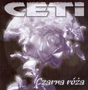

Home Artist links Label link

Ceti - Czarna Róza
| Artist: | Ceti |
| Title: | Czarna Róza |
| Label: | Oskar 1019 CD |
| Length(s): | 79 minutes |
| Year(s) of release: | 1990/2004 |
| Month of review: | [03/2006] |
Sample this album in MP3
The music
Ceti is a Polish band, and this was their debut recorded in 1989 and 1990.
Besides the standard line-up, the band also features the legendary Czeslaw
Niemen on two tracks. This chock full cd not only includes the studio album,
but also three bonus tracks, a bonus ep, called Maxi Promotion originally
released in 1994, and three live tracks. The style of the band is ballsy hard rock,
but with a number of symphonic and epic ingredients that might make it interesting
for the progrocker who likes his music on the heavy side. However, this is no
progmetal (yet). I think the closest to Ceti is Hungarian Omega in the eighties
and early nineties, or maybe the more melodic and symphonic side of the
German Scorpions. A song like Brama Taczy for instance shows that there
is more to this band: the use of softer guitars and brassy keyboards help
make it sound less like the plodding rock which fills up the holes in between.
And the band can also work with atmospheres as evidenced by
Epitafium II from the EP, while at others the band moves in the direction
of AOR. Still, the basis is and stays hard rock, and the vocals also stay
in hard rock mode throughout. Fans of the style and bands like Omega will certainly
hail this extensive release with all those bonus tracks compiled by the Polish
Oskar label.
© Jurriaan Hage